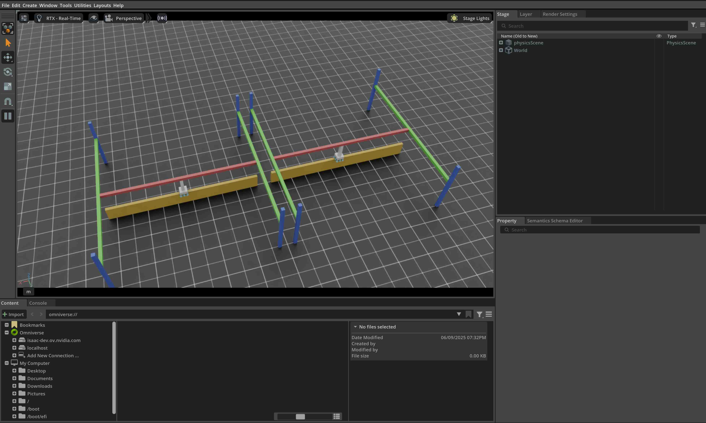

本教程介绍如何操作末端执行器装有 Surface Gripper 的 Articulation Robot。内容建立在上一节 Articulation 操作的基础上。请注意，从 Isaac Sim 5.0 开始，Surface Gripper Backend 仅支持 CPU。
1 代码
本教程对应 run_surface_gripper.py，位于 scripts/tutorials/01_assets 目录。
代码 run_surface_gripper.py
# Copyright (c) 2022-2026, The Isaac Lab Project Developers (https://github.com/isaac-sim/IsaacLab/blob/main/CONTRIBUTORS.md).
# All rights reserved.
#
# SPDX-License-Identifier: BSD-3-Clause
"""This script demonstrates how to spawn a pick-and-place robot equipped with a surface gripper and interact with it.
.. code-block:: bash
# Usage
./isaaclab.sh -p scripts/tutorials/01_assets/run_surface_gripper.py --device=cpu
When running this script make sure the --device flag is set to cpu. This is because the surface gripper is
currently only supported on the CPU.
"""
"""Launch Isaac Sim Simulator first."""
import argparse
from isaaclab.app import AppLauncher
# add argparse arguments
parser = argparse.ArgumentParser(description="Tutorial on spawning and interacting with a Surface Gripper.")
# append AppLauncher cli args
AppLauncher.add_app_launcher_args(parser)
# parse the arguments
args_cli = parser.parse_args()
# launch omniverse app
app_launcher = AppLauncher(args_cli)
simulation_app = app_launcher.app
"""Rest everything follows."""
import torch
import isaaclab.sim as sim_utils
from isaaclab.assets import Articulation, SurfaceGripper, SurfaceGripperCfg
from isaaclab.sim import SimulationContext
##
# Pre-defined configs
##
from isaaclab_assets import PICK_AND_PLACE_CFG # isort:skip
def design_scene():
"""Designs the scene."""
# Ground-plane
cfg = sim_utils.GroundPlaneCfg()
cfg.func("/World/defaultGroundPlane", cfg)
# Lights
cfg = sim_utils.DomeLightCfg(intensity=3000.0, color=(0.75, 0.75, 0.75))
cfg.func("/World/Light", cfg)
# Create separate groups called "Origin1", "Origin2"
# Each group will have a robot in it
origins = [[2.75, 0.0, 0.0], [-2.75, 0.0, 0.0]]
# Origin 1
sim_utils.create_prim("/World/Origin1", "Xform", translation=origins[0])
# Origin 2
sim_utils.create_prim("/World/Origin2", "Xform", translation=origins[1])
# Articulation: First we define the robot config
pick_and_place_robot_cfg = PICK_AND_PLACE_CFG.copy()
pick_and_place_robot_cfg.prim_path = "/World/Origin.*/Robot"
pick_and_place_robot = Articulation(cfg=pick_and_place_robot_cfg)
# Surface Gripper: Next we define the surface gripper config
surface_gripper_cfg = SurfaceGripperCfg()
# We need to tell the View which prim to use for the surface gripper
surface_gripper_cfg.prim_path = "/World/Origin.*/Robot/picker_head/SurfaceGripper"
# We can then set different parameters for the surface gripper, note that if these parameters are not set,
# the View will try to read them from the prim.
surface_gripper_cfg.max_grip_distance = 0.1 # [m] (Maximum distance at which the gripper can grasp an object)
surface_gripper_cfg.shear_force_limit = 500.0 # [N] (Force limit in the direction perpendicular direction)
surface_gripper_cfg.coaxial_force_limit = 500.0 # [N] (Force limit in the direction of the gripper's axis)
surface_gripper_cfg.retry_interval = 0.1 # seconds (Time the gripper will stay in a grasping state)
# We can now spawn the surface gripper
surface_gripper = SurfaceGripper(cfg=surface_gripper_cfg)
# return the scene information
scene_entities = {"pick_and_place_robot": pick_and_place_robot, "surface_gripper": surface_gripper}
return scene_entities, origins
def run_simulator(
sim: sim_utils.SimulationContext, entities: dict[str, Articulation | SurfaceGripper], origins: torch.Tensor
):
"""Runs the simulation loop."""
# Extract scene entities
robot: Articulation = entities["pick_and_place_robot"]
surface_gripper: SurfaceGripper = entities["surface_gripper"]
# Define simulation stepping
sim_dt = sim.get_physics_dt()
count = 0
# Simulation loop
while simulation_app.is_running():
# Reset
if count % 500 == 0:
# reset counter
count = 0
# reset the scene entities
# root state
# we offset the root state by the origin since the states are written in simulation world frame
# if this is not done, then the robots will be spawned at the (0, 0, 0) of the simulation world
root_state = robot.data.default_root_state.clone()
root_state[:, :3] += origins
robot.write_root_pose_to_sim(root_state[:, :7])
robot.write_root_velocity_to_sim(root_state[:, 7:])
# set joint positions with some noise
joint_pos, joint_vel = robot.data.default_joint_pos.clone(), robot.data.default_joint_vel.clone()
joint_pos += torch.rand_like(joint_pos) * 0.1
robot.write_joint_state_to_sim(joint_pos, joint_vel)
# clear internal buffers
robot.reset()
print("[INFO]: Resetting robot state...")
# Opens the gripper and makes sure the gripper is in the open state
surface_gripper.reset()
print("[INFO]: Resetting gripper state...")
# Sample a random command between -1 and 1.
gripper_commands = torch.rand(surface_gripper.num_instances) * 2.0 - 1.0
# The gripper behavior is as follows:
# -1 < command < -0.3 --> Gripper is Opening
# -0.3 < command < 0.3 --> Gripper is Idle
# 0.3 < command < 1 --> Gripper is Closing
print(f"[INFO]: Gripper commands: {gripper_commands}")
mapped_commands = [
"Opening" if command < -0.3 else "Closing" if command > 0.3 else "Idle" for command in gripper_commands
]
print(f"[INFO]: Mapped commands: {mapped_commands}")
# Set the gripper command
surface_gripper.set_grippers_command(gripper_commands)
# Write data to sim
surface_gripper.write_data_to_sim()
# Perform step
sim.step()
# Increment counter
count += 1
# Read the gripper state from the simulation
surface_gripper.update(sim_dt)
# Read the gripper state from the buffer
surface_gripper_state = surface_gripper.state
# The gripper state is a list of integers that can be mapped to the following:
# -1 --> Open
# 0 --> Closing
# 1 --> Closed
# Print the gripper state
print(f"[INFO]: Gripper state: {surface_gripper_state}")
mapped_commands = [
"Open" if state == -1 else "Closing" if state == 0 else "Closed" for state in surface_gripper_state.tolist()
]
print(f"[INFO]: Mapped commands: {mapped_commands}")
def main():
"""Main function."""
# Load kit helper
sim_cfg = sim_utils.SimulationCfg(device=args_cli.device)
sim = SimulationContext(sim_cfg)
# Set main camera
sim.set_camera_view([2.75, 7.5, 10.0], [2.75, 0.0, 0.0])
# Design scene
scene_entities, scene_origins = design_scene()
scene_origins = torch.tensor(scene_origins, device=sim.device)
# Play the simulator
sim.reset()
# Now we are ready!
print("[INFO]: Setup complete...")
# Run the simulator
run_simulator(sim, scene_entities, scene_origins)
if __name__ == "__main__":
# run the main function
main()
# close sim app
simulation_app.close()
2 代码解析
2.1 设计 Scene
与前面的教程一样，Scene 中包含 Ground Plane 和 Distant Light。本例从 USD 文件生成一台三轴 Pick-and-Place Robot：龙门机构可沿 x、y、z 三个方向移动，末端执行器装有 Surface Gripper。USD 文件包含 Robot 的几何体、关节、物理属性和 Surface Gripper。若要为自己的 Robot 添加类似 Gripper，建议先查看 Isaac Lab Nucleus 中该 Asset 的 USD 文件。
Robot 使用预定义的 Configuration Object；Surface Gripper 则需要创建 assets.SurfaceGripperCfg，并传入相应参数。
可用参数如下：
max_grip_distance：机械手可以抓取 Object 的最大距离。shear_force_limit：夹具可以在垂直于夹具轴线的方向上施加的最大力。coaxial_force_limit：夹具可以在夹具轴线方向上施加的最大力。retry_interval：机械手保持抓取状态的时间。
将 Robot Configuration 传给 assets.Articulation 构造函数即可创建 Articulation；Surface Gripper 的创建方式相同，将配置传给 assets.SurfaceGripper 构造函数后即可加入 Scene。实际初始化会在按下 Play、Simulation 开始运行时完成。
# Create separate groups called "Origin1", "Origin2"
# Each group will have a robot in it
origins = [[2.75, 0.0, 0.0], [-2.75, 0.0, 0.0]]
# Origin 1
sim_utils.create_prim("/World/Origin1", "Xform", translation=origins[0])
# Origin 2
sim_utils.create_prim("/World/Origin2", "Xform", translation=origins[1])
# Articulation: First we define the robot config
pick_and_place_robot_cfg = PICK_AND_PLACE_CFG.copy()
pick_and_place_robot_cfg.prim_path = "/World/Origin.*/Robot"
pick_and_place_robot = Articulation(cfg=pick_and_place_robot_cfg)
# Surface Gripper: Next we define the surface gripper config
surface_gripper_cfg = SurfaceGripperCfg()
# We need to tell the View which prim to use for the surface gripper
surface_gripper_cfg.prim_path = "/World/Origin.*/Robot/picker_head/SurfaceGripper"
# We can then set different parameters for the surface gripper, note that if these parameters are not set,
# the View will try to read them from the prim.
surface_gripper_cfg.max_grip_distance = 0.1 # [m] (Maximum distance at which the gripper can grasp an object)
surface_gripper_cfg.shear_force_limit = 500.0 # [N] (Force limit in the direction perpendicular direction)
surface_gripper_cfg.coaxial_force_limit = 500.0 # [N] (Force limit in the direction of the gripper's axis)
surface_gripper_cfg.retry_interval = 0.1 # seconds (Time the gripper will stay in a grasping state)
# We can now spawn the surface gripper
surface_gripper = SurfaceGripper(cfg=surface_gripper_cfg)
2.2 运行 Simulation Loop
Simulation Loop 会定期重置 Simulation，向 Articulation 和 Surface Gripper 设置 Command，推进 Simulation，并更新内部 Buffer。
2.2.1 重置 Simulation
重置 Surface Gripper 时，只需调用 SurfaceGripper.reset() 清空内部 Buffer 和缓存。
# Opens the gripper and makes sure the gripper is in the open state
surface_gripper.reset()
2.2.2 步进 Simulation
向 Surface Gripper 应用 Command 分为两个步骤：
设置所需的 Commands：设置所需的夹具 Commands（打开、关闭或空闲）。
将数据写入Simulation：基于 Surface Gripper 的 Configuration，此 Step 处理写入 将值转换为 PhysX Buffer。
本教程使用随机 Command 控制 Gripper，其行为如下：
-1 < Command < -0.3 –> 夹具正在打开
-0.3 < Command < 0.3 –> 夹具空闲
0.3 < Command < 1 –> 夹具正在关闭
每个 Step 随机采样 Command，并通过 SurfaceGripper.set_grippers_command() 发送给 Gripper。设置目标后，调用 SurfaceGripper.write_data_to_sim() 将数据写入 PhysX Buffer，最后推进 Simulation。
# Sample a random command between -1 and 1.
gripper_commands = torch.rand(surface_gripper.num_instances) * 2.0 - 1.0
# The gripper behavior is as follows:
# -1 < command < -0.3 --> Gripper is Opening
# -0.3 < command < 0.3 --> Gripper is Idle
# 0.3 < command < 1 --> Gripper is Closing
print(f"[INFO]: Gripper commands: {gripper_commands}")
mapped_commands = [
"Opening" if command < -0.3 else "Closing" if command > 0.3 else "Idle" for command in gripper_commands
]
print(f"[INFO]: Mapped commands: {mapped_commands}")
# Set the gripper command
surface_gripper.set_grippers_command(gripper_commands)
# Write data to sim
surface_gripper.write_data_to_sim()
2.2.3 更新状态
可以通过 assets.SurfaceGripper.state() Property 查询当前状态。它返回形状为 [num_envs] 的 Tensor，每个元素为 -1、0 或 1，分别表示对应 Gripper 的状态。每次调用 assets.SurfaceGripper.update() 时都会更新该 Property。
-1–> 夹具打开0–> 夹具正在关闭1–> 夹具已关闭
# Read the gripper state from the simulation
surface_gripper.update(sim_dt)
# Read the gripper state from the buffer
surface_gripper_state = surface_gripper.state
3 代码执行
要运行代码并查看结果，让我们从 Terminal 运行 Script：
./isaaclab.sh -p scripts/tutorials/01_assets/run_surface_gripper.py --device cpu
此 Command 应打开一个带有接Ground Plane、灯和两个拾放 Robots 的 Stage。
在 Terminal 中，您应该看到夹具状态和正在打印的 Command。
要停止 Simulation，您可以关闭窗口，或按 Ctrl+C 在 Terminal 中。

在本教程中，我们学习了如何创建 Surface Gripper 并与之交互。我们看到了如何设置 Commands 和 查询夹具状态。我们还了解了如何更新其 Buffers 以从 Simulation 读取最新状态。
除了本教程之外，我们还提供了其他几个Scripts，即Spawn与Robots不同。这些都包括在内
在 scripts/demos 目录。您可以将这些 Scripts 运行为：
# Spawn many pick-and-place robots and perform a pick-and-place task
./isaaclab.sh -p scripts/demos/pick_and_place.py
请注意，实际上，用户需要注册他们的 assets.SurfaceGripper 里面的实例
一个 isaaclab.InteractiveScene Object，它将自动处理对
assets.SurfaceGripper.write_data_to_sim() 和 assets.SurfaceGripper.update() Methods。
# Create a scene
scene = InteractiveScene()
# Register the surface gripper
scene.surface_grippers["gripper"] = surface_gripper